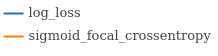
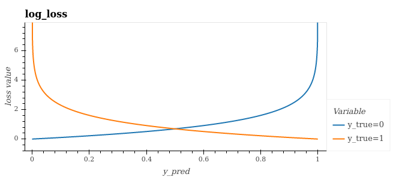
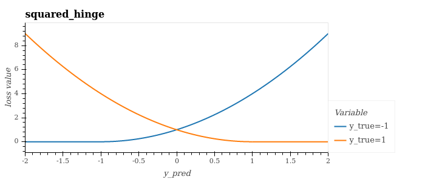
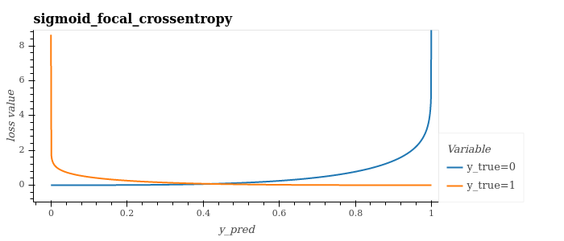

Losses and Metrics¶
The lossses and metrics modules contain some commonly used such functions implemented with jax to benefit from jax primitives like grad and jit. The documentation below also lists some commonly used such metrics that we have not implemented in jax, and we instead point readers to well-used implementations (often scikit-learn, marked with an asterisk *). Such functions have not been implemented because we believe they will not be required to work with the jax primitives (e.g. metrics do not often need to be differentiated) - of course if you feel this library would benefit from such implementations, contributions are very welcome.
Loss functions are normally minimised (e.g. for learning/optimising a model), and metrics are normally maximised (e.g for further evaluating the performance of a model). Most loss and metric functions have been designed to work in a similar way to scikit-learn metrics if available, otherwise tensorflow/tensorflow addons (e.g. same names, similar implementations), and have the form:
function_name(y_true: jnp.ndarray, y_pred: jnp.ndarray) -> jnp.ndarray
Bounding Box¶
Losses¶
from jax_toolkit.losses.bounding_box import giou_loss
giou_loss(boxes1: jnp.ndarray, boxes2: jnp.ndarray) -> jnp.ndarray
# boxes are encoded as [y_min, x_min, y_max, x_max], e.g. jnp.array([[4.0, 3.0, 7.0, 5.0], [5.0, 6.0, 10.0, 7.0]])
| Name | Notes |
|---|---|
| giou_loss | Generalized Intersection over Union (GIoU) is designed to improve on the Intersection over Union metric. Benefits include being differentiable, so that is can be used to train neural networks. More benefits and details can be found here. |
Classification¶
Losses¶
from jax_toolkit.losses.classification import LOSS_FUNCTION
| Name | Notes |
|---|---|
| log_loss (aka. binary/multi-class log loss or binary/categorical crossentropy) | This applies a large penalty for confident, wrong predictions (see plots below). |
| squared_hinge | This has been shown to converge faster, provide better performance and be more robust to noise (see this paper). Expects y_true to be -1 or +1. |
| sigmoid_focal_crossentropy | Shown to be useful for classification when you have highly imbalanced classes (e.g. for "object detection where the imbalance between the background class and other classes is extremely high"). |
| y_true = 0 | y_true = 1 |
|---|---|
 |
 |

| Loss | Plot |
|---|---|
| log_loss |  |
| squared_hinge |  |
| sigmoid_focal_crossentropy |  |
Metrics¶
from jax_toolkit.metrics.classification import LOSS_FUNCTION
| Name | Notes |
|---|---|
| balanced_accuracy_score* | Good interpretability, thus useful for displaying/explaining results. |
| intersection_over_union (aka. Jaccard Index) | Useful for image segmentation problems, including for handling imbalanced classes (it gives all classes equal weight). |
| matthews_correlation_coefficient* | - Lots of symmetry (none of True/False Positives/Negatives are more important over another). - Good interpretability 1 := perfect prediction0 := random prediction−1 := total disagreement between prediction & observation |
Probabilistic¶
from jax_toolkit.losses.probabilistic import kullback_leibler_divergence
Losses¶
| Name | Notes |
|---|---|
| kullback_leibler_divergence | Measure how the probability distributions of y_true and y_pred differ (0 means identical). Often used in generative modelling. |
Regression¶
Losses¶
from jax_toolkit.losses.regression import LOSS_FUNCTION
| Name | Notes |
|---|---|
| mean_absolute_error | Good interpretability, thus useful for displaying/explaining results. |
| median_absolute_error | - Good interpretability. - Median can be more robust that the mean (e.g the mean number of legs a dog has is less than 4, whilst the median is 4). |
| max_absolute_error | Good interpretability. |
| mean_squared_error | Relatively simple and (mathematically) convenient. |
| mean_squared_log_error | For problems where y_true has a wide spread or large values, this does not punish a model as heavily as mean squared error. |
Metrics¶
from jax_toolkit.metrics.regression import LOSS_FUNCTION
| Name | Notes |
|---|---|
| r2_score | Indication of goodness of fit. - 0 := constant model that always predicts the mean of y- 1 := perfect fit |
Utils¶
If you are familiar with haiku, a JAX-based neural network library, you can use the get_haiku_loss_function() function to get a loss from jax_toolkit that can be used with haiku:
import haiku as hk
import jax
import jax.numpy as jnp
from jax_toolkit.losses.utils import get_haiku_loss_function
def net_function(x: jnp.ndarray) -> jnp.ndarray:
net = hk.Sequential([
...
])
predictions: jnp.ndarray = net(x)
return predictions
net_transform = hk.transform(net_function)
loss_function = get_haiku_loss_function(net_transform, loss="sigmoid_focal_crossentropy", alpha=None, gamma=2.0)
# Train model,
...
grads = jax.grad(loss_function)(params, x, y)
...
Useful resources¶
[1] 24 Evaluation Metrics for Binary Classification (And When to Use Them)